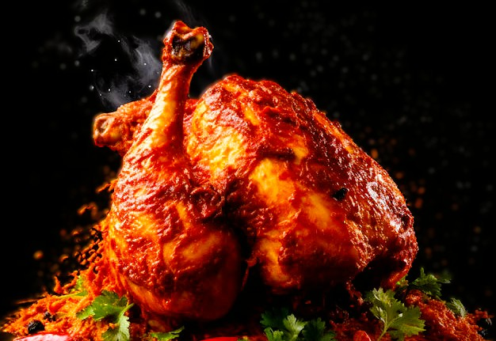

Favourite Of Charu
Biryani
Charu likes biryani very much one of the Favourite dish in his life here are some quotes from charu heart " biryani is not a food its a emotion of every one heart "

Parotta
charu likes parotta but he ate only two all the times more than two is not possible for him " If more than two is mistry of the life "

Tandoori Chicken
Tandoori Chicken is a food which charu eat some time but ,it not a Favourite food of charu and also delicious food she eat we eat Tandoori in limit only because it not come under buget
